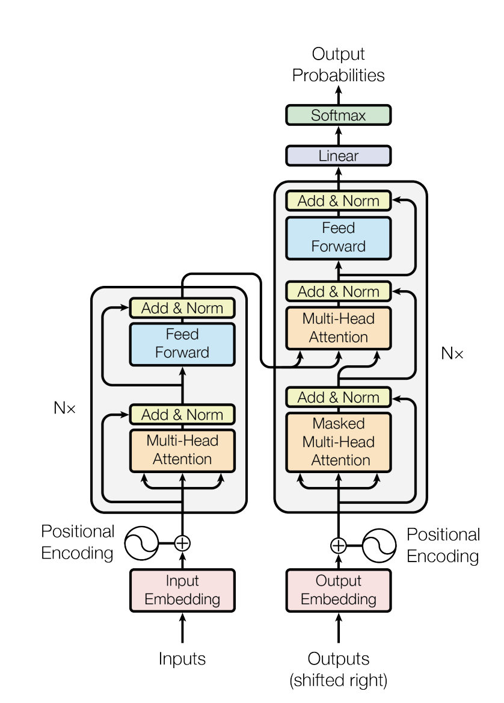

Chapter 3 Chapter 3: Transformers
The Transformer architecture, introduced in the landmark paper “Attention Is All You Need”, discarded recurrence and convolution entirely in favor of attention mechanisms. It has since become the foundation for virtually all state-of-the-art models in NLP, Vision, and beyond.
3.1 The Architecture
The original Transformer is an Encoder-Decoder model designed for machine translation.
3.1.1 The Encoder
The encoder processes the input sequence and compresses it into a context-rich representation. It consists of a stack of identical layers, each containing: 1. Multi-Head Self-Attention 2. Feed-Forward Network (FFN) 3. Layer Normalization & Residual Connections
3.1.2 The Decoder
The decoder generates the output sequence one token at a time. In addition to the components found in the encoder, it includes a Masked Self-Attention layer (to prevent looking at future tokens) and Cross-Attention (to attend to the encoder’s output).

3.2 Evolution of Architectures
While the original model used both encoder and decoder, modern models often specialize:
| Type | Description | Examples | Best For |
|---|---|---|---|
| Encoder-Only | Bidirectional understanding of the whole input. | BERT, RoBERTa | Classification, NER, Sentiment Analysis |
| Decoder-Only | Unidirectional (left-to-right) generation. | GPT-4, Llama 3 | Text Generation, Chatbots, Code Completion |
| Encoder-Decoder | Maps input sequence to output sequence. | T5, BART | Translation, Summarization |
3.3 Key Innovations & Updates
The standard Transformer has evolved significantly since 2017.
3.3.1 Mixture of Experts (MoE)
As models grew larger, training costs skyrocketed. Mixture of Experts (MoE) (e.g., Mixtral 8x7B, Switch Transformer) addresses this by activating only a subset of parameters for each token.
- Sparse Activation: Instead of using one dense FFN, the model has multiple “expert” networks (e.g., 8 experts). For every token, a router network (or gating network) selects the top-k experts (usually k=1 or 2) to process that specific token.
- Routing Mechanism: The router computes a probability distribution over experts. The token is sent to the experts with the highest probabilities. \[ G(x) = \text{Softmax}(x \cdot W_g) \]
- Load Balancing: A critical challenge is ensuring all experts are used equally. If one expert is popular, it becomes a bottleneck. Auxiliary loss functions are used to encourage balanced routing.
- Efficiency: This allows models to have massive parameter counts (trillions) while keeping inference costs low (comparable to much smaller dense models).
3.3.2 Grouped-Query Attention (GQA) & Multi-Query Attention (MQA)
Standard Multi-Head Attention (MHA) has a separate Key and Value head for every Query head. This results in a large KV cache size, slowing down inference.
- Multi-Query Attention (MQA): Uses one Key and Value head shared across all Query heads. This drastically reduces memory usage but can degrade performance.
- Grouped-Query Attention (GQA): A middle ground used in Llama 2 and Llama 3. It groups Query heads (e.g., 8 groups) and assigns one Key/Value head to each group. This offers a better trade-off between performance and efficiency.
3.3.3 Rotary Positional Embeddings (RoPE)
The original Transformer used absolute sinusoidal positional encodings. RoPE (Su et al., 2021) encodes relative position by rotating the query and key vectors in the embedding space. This allows models to generalize better to sequence lengths longer than those seen during training.
3.4 LLM Agents
Large Language Models have evolved beyond simple text completion into autonomous agents capable of reasoning, planning, and taking actions in the world. This section explores the architecture and design patterns that enable LLM-based agents.
3.4.1 What is an LLM Agent?
An LLM Agent extends a base language model with:
- Tools/Actions: Ability to call external functions (search, code execution, APIs)
- Memory: Short-term (context) and long-term (retrieval) storage
- Planning: Breaking down complex tasks into subtasks
- Reasoning: Chain-of-thought and self-reflection capabilities
┌─────────────────────────────────────────────┐
│ LLM Agent │
├─────────────────────────────────────────────┤
│ ┌─────────┐ ┌─────────┐ ┌─────────────┐ │
│ │ Memory │ │ LLM │ │ Tools │ │
│ │ - Short │◄─┤ (Brain) ├─►│ - Search │ │
│ │ - Long │ │ │ │ - Code │ │
│ └─────────┘ └────┬────┘ │ - APIs │ │
│ │ └─────────────┘ │
│ ┌─────▼─────┐ │
│ │ Planning │ │
│ │ & Action │ │
│ └───────────┘ │
└─────────────────────────────────────────────┘3.4.2 Agent Architectures
3.4.2.1 ReAct (Reason + Act)
ReAct interleaves reasoning and action:
Thought: I need to find the population of Tokyo
Action: search("Tokyo population 2024")
Observation: Tokyo has approximately 14 million people...
Thought: Now I have the answer
Action: finish("Tokyo has ~14 million people")The pattern: Thought → Action → Observation → Thought → …
3.4.3 Tool Use
Modern agents can use diverse tools:
| Tool Type | Examples | Use Case |
|---|---|---|
| Search | Web search, RAG | Information retrieval |
| Code | Python interpreter, sandboxes | Computation, analysis |
| APIs | Weather, stocks, databases | Real-time data |
| Files | Read, write, edit | Document manipulation |
| Browser | Navigate, click, extract | Web automation |
3.5 Prompting Techniques
The way we communicate with LLMs dramatically affects their performance. Effective prompting is both an art and an emerging science.
3.5.1 Basic Prompting Patterns
3.5.1.1 Zero-Shot Prompting
Direct instruction without examples:
Classify the sentiment of this review as positive or negative:
"The food was amazing but the service was slow."3.5.1.2 Few-Shot Prompting
Provide examples to guide the model:
Classify sentiment:
"Great product!" → Positive
"Terrible experience" → Negative
"The food was amazing but the service was slow." →3.5.1.3 Chain-of-Thought (CoT)
Encourage step-by-step reasoning:
Q: If John has 3 apples and buys 2 more, then gives
away half, how many does he have?
A: Let me think step by step:
1. John starts with 3 apples
2. He buys 2 more: 3 + 2 = 5 apples
3. He gives away half: 5 / 2 = 2.5 apples
John has 2.5 apples (or 2 if we round down).3.5.2 Advanced Prompting Techniques
3.5.2.1 Self-Consistency
Generate multiple reasoning paths and vote on the answer:
- Sample N different chain-of-thought responses
- Extract the final answer from each
- Return the most common answer (majority vote)
3.5.2.2 Tree of Thoughts (ToT)
Explore multiple reasoning branches:
Problem → [Branch A] → [Branch A1, A2]
→ [Branch B] → [Branch B1, B2]
Evaluate branches, prune bad ones, continue best paths3.5.2.3 ReAct Prompting
Combine reasoning with actions:
Question: What is the elevation of the highest mountain
in the country where Einstein was born?
Thought: I need to find where Einstein was born.
Action: Search[Albert Einstein birthplace]
Observation: Albert Einstein was born in Ulm, Germany.
Thought: Now I need the highest mountain in Germany.
Action: Search[highest mountain Germany]
Observation: The Zugspitze at 2,962 meters.
Thought: I have the answer.
Action: Finish[2,962 meters]3.5.3 Prompting Best Practices
| Practice | Description |
|---|---|
| Be Specific | Clear, detailed instructions outperform vague ones |
| Use Delimiters | Separate sections with ```, —, or XML tags |
| Specify Format | Request JSON, markdown, or structured output |
| Provide Context | Include relevant background information |
| Use Personas | “You are an expert data scientist…” |
| Show Examples | Few-shot learning improves consistency |
| Request Reasoning | “Explain your thinking” improves accuracy |
3.6 Context Engineering
As LLMs are deployed in production, context engineering has emerged as a critical discipline—the systematic design of what information goes into the model’s context window.
3.6.1 The Context Window
Modern LLMs have varying context lengths:
| Model | Context Length |
|---|---|
| GPT-4 Turbo | 128K tokens |
| Claude 3 | 200K tokens |
| Gemini 1.5 | 1M+ tokens |
| Llama 3 | 8K-128K tokens |
Despite large windows, what goes in matters more than how much.
3.6.2 Retrieval-Augmented Generation (RAG)
RAG dynamically retrieves relevant information:
┌──────────────┐ ┌─────────────┐ ┌─────────┐
│ Query │────►│ Retriever │────►│ LLM │
└──────────────┘ │ (Vector DB) │ └─────────┘
└─────────────┘
│
┌─────▼─────┐
│ Retrieved │
│ Documents │
└───────────┘3.6.3 Context Window Management
3.6.4 System Prompts & Instructions
The system prompt sets the agent’s behavior:
You are a helpful coding assistant. You:
- Write clean, documented code
- Explain your reasoning
- Ask clarifying questions when requirements are unclear
- Suggest tests for your implementations
When you don't know something, say so clearly.3.6.5 Memory Systems
3.6.5.2 Long-Term Memory
External storage for persistent information:
- Vector Databases: Semantic search over past interactions
- Knowledge Graphs: Structured facts and relationships
- Key-Value Stores: Exact recall of specific information
3.6.5.3 Memory Architectures
┌─────────────────────────────────────────────┐
│ Working Memory │
│ (Current Context Window) │
├─────────────────────────────────────────────┤
│ ┌───────────┐ ┌───────────┐ ┌────────┐ │
│ │ Episodic │ │ Semantic │ │ Procedural│
│ │ (Events) │ │ (Facts) │ │ (Skills) │ │
│ └───────────┘ └───────────┘ └────────┘ │
│ Long-Term Memory │
└─────────────────────────────────────────────┘3.6.6 Structured Output
Constrain model outputs for reliability:
3.6.7 Evaluation & Iteration
Context engineering requires systematic evaluation:
- Define Metrics: Accuracy, latency, cost, user satisfaction
- Create Test Sets: Representative queries with expected outputs
- A/B Test: Compare prompt/context variations
- Monitor Production: Track real-world performance
- Iterate: Continuously improve based on data
3.7 Agentic Frameworks & Tools
Several frameworks have emerged to build LLM applications:
| Framework | Focus | Key Features |
|---|---|---|
| LangChain | General-purpose | Chains, agents, extensive integrations |
| LlamaIndex | RAG & data | Document loaders, indices, query engines |
| AutoGen | Multi-agent | Conversational agents, code execution |
| CrewAI | Multi-agent | Role-based agents, workflows |
| Semantic Kernel | Enterprise | Microsoft ecosystem, planners |
| DSPy | Optimization | Programmatic prompt optimization |
3.7.1 Building Production Agents
Key considerations for production deployment:
- Reliability: Handle failures gracefully, retry logic
- Observability: Log all LLM calls, trace execution
- Cost Control: Token budgets, caching, model routing
- Safety: Input/output filtering, rate limiting
- Latency: Streaming, parallel tool calls, caching
3.8 Theoretical Insight: LLMs as World Models
A foundational paper by Richens et al. (ICML 2025), “General Agents Contain World Models”, provides crucial theoretical grounding for understanding why transformer-based agents are so effective.
3.8.1 The Core Theorem
The paper proves that any agent capable of generalizing to multi-step, goal-directed tasks must have learned a world model—an internal representation that predicts how actions affect future states.
Theorem: General goal-directed behavior is impossible without predictive modeling of environment dynamics.
3.8.2 Why This Matters for Transformers
3.8.2.1 Next-Token Prediction IS World Modeling
When an LLM is trained to predict the next token, it implicitly learns:
\[ P(x_{t+1} | x_{1:t}) \approx P(\text{future} | \text{past}) \]
For text describing the world, this becomes a world model:
- “If I drop a ball, it will…” → Physics prediction
- “If the economy contracts, then…” → Economic dynamics
- “After mixing the chemicals…” → Causal reasoning
3.8.2.2 Emergent Capabilities Explained
The theorem explains why capabilities emerge with scale:
| Capability | World Model Interpretation |
|---|---|
| Chain-of-thought | Explicit simulation using world model |
| In-context learning | Rapid world model adaptation |
| Reasoning | Multi-step prediction through states |
| Planning | Evaluating action consequences |
3.8.3 Implications for Agent Design
3.8.3.1 1. World Model Quality Bounds Capability
\[ \text{Agent Capability} \leq f(\text{World Model Accuracy}) \]
To build more capable agents, we must improve their world models: - Train on more diverse data (better coverage) - Use larger models (more capacity) - Employ explicit world modeling objectives
3.8.3.2 2. Failures are World Model Failures
When LLM agents fail, it’s often because their world model is wrong:
| Failure Mode | World Model Deficiency |
|---|---|
| Hallucinations | Incorrect predictions about facts |
| Planning failures | Wrong action-consequence mapping |
| Physical errors | Insufficient physics modeling |
| Social mistakes | Inaccurate theory of mind |
3.8.3.3 3. Extracting and Analyzing World Models
The paper shows world models can be extracted from trained agents:
Agent Policy → Probe Representations → Decode Predictions
↓
Extracted World ModelThis enables: - Debugging: Find where the world model is wrong - Alignment: Verify beliefs match reality - Improvement: Target training on model weaknesses
3.8.4 Connecting to RAG and Tool Use
3.8.5 The Model-Free Illusion
Even “model-free” approaches to LLM agents implicitly rely on world models:
- Zero-shot prompting: Uses pre-trained world model
- Few-shot learning: Adapts world model with examples
- Fine-tuning: Specializes world model for domain
The paper proves there is no escaping this: effective agents require world models, whether explicit or implicit.
3.8.6 Practical Takeaways
For building better LLM agents:
- Invest in world model quality: Better base models, more diverse training
- Augment with retrieval: Extend world model with external knowledge
- Use tools strategically: Fill gaps in world model coverage
- Analyze failures: Identify and fix world model deficiencies
- Evaluate world models: Measure predictive accuracy, not just task performance
This theoretical foundation helps explain why current approaches work and guides the development of more capable AI agents.